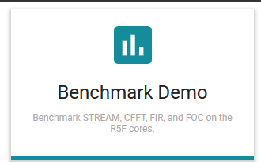
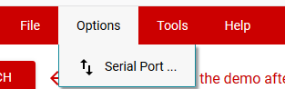
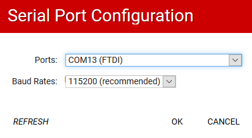
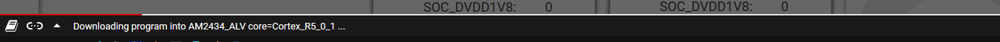
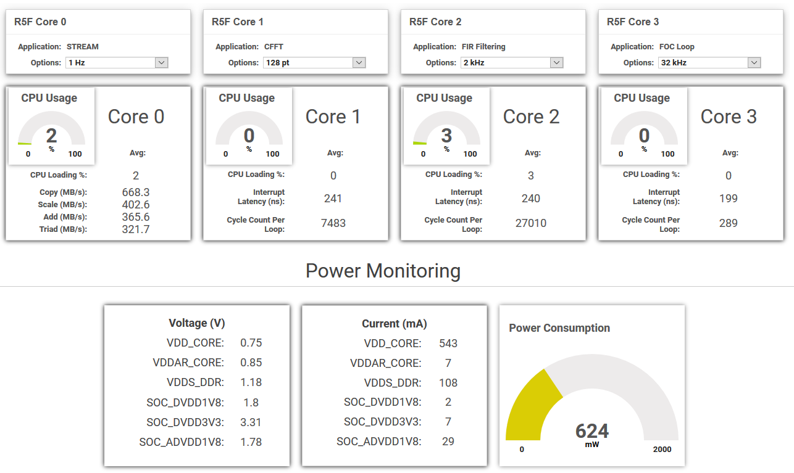

Introduction
The Benchmark Demo showcases the capabilities of the 4 R5F cores on AM243x. Each R5F core runs a particular benchmark test and displays the results on a Cloud-based GUI.
The AM243X-EVM version of the demo also has power monitoring functionality and displays voltage, current, and total power consumption.
The mapping of R5F core to the benchmark that is run is shown below
| R5 Core | Benchmark | Default Option | Description |
| R5F Core 0 (rf5ss0-0) | Stream memory benchmark | 1 hz execution loop | Memory bandwidth benchmark for R5. For more details on the STREAM benchmark, see http://www.cs.virginia.edu/stream/ref.html |
| R5F Core 1 (rf5ss0-1) | CFFT benchmark | 1Khz execution loop, 128 point CFFT | CMSIS CFFT benchmark for R5F |
| R5F Core 2 (rf5ss1-0) | FIR filtering benchmark | 1 Khz execution loop, 320 point, 29-tap | CMSIS FIR filtering benchmark for R5F |
| R5F Core 3 (rf5ss1-1) | Field Oriented Control (FOC) benchmark | 32 Khz execution loop | CMSIS FOC benchmark for R5F |
Steps to Run the Example
EVM Setup
- To run the demo from GUI composer, firstly you need to make sure the EVM is setup as mentioned here, EVM Setup
- Specifically,
- Make sure you have connected the power, USB UART and USB JTAG cables as mentioned here, Cable Connections
- Make sure you have identified the UART port that is used for the print logs as mentioned here, Setup UART Terminal
- Check if the SOC initialization binary is already flashed. If flashed, you will see something like below in the UART terminal,
Starting NULL Bootloader ...
DMSC Firmware Version 21.1.1--v2021.01a (Terrific Lla
DMSC Firmware revision 0x15
DMSC ABI revision 3.1
INFO: Bootloader_runCpu:147: CPU r5f1-0 is initialized to 800000000 Hz !!!
INFO: Bootloader_runCpu:147: CPU r5f1-1 is initialized to 800000000 Hz !!!
INFO: Bootloader_runCpu:147: CPU m4f0-0 is initialized to 400000000 Hz !!!
INFO: Bootloader_loadSelfCpu:199: CPU r5f0-0 is initialized to 800000000 Hz !!!
INFO: Bootloader_loadSelfCpu:199: CPU r5f0-1 is initialized to 800000000 Hz !!!
INFO: Bootloader_runSelfCpu:209: All done, reseting self ...
- If you see this in the UART terminal, you are all set to launch the demo, else you will need to flash the SOC initialization binary as mentioned here, Flash SOC Initialization Binary
- Now you can launch the demo via GUI composer as mentioned next
Launch the demo
- Close all open UART terminals and JTAG connections. GUI composer via the browser will need access to the UART port and JTAG port.
- Power on the EVM with the USB UART and USB JTAG cables connected.
- In a web browser, Firefox, Chrome or Edge, click on the below link
- Click on benchmark demo

- Select the UART port noted during EVM setup and set the UART baud rate as shown below,


- Click on
LAUNCH to launch the demo
- You will see some setup happening in the bottom of the browser window, let this continue. First time this make take a minute or so to complete.

- After all the setup and download is done, you will see the benchmark demo results updating in the GUI as shown below

- You can interact with the GUI options to change the settings and see the updated results.
Supported Combinations
| Parameter | Value |
| CPU + OS | r5fss0-0 nortos |
| r5fss0-1 nortos |
| r5fss1-0 nortos |
| r5fss1-1 nortos |
| Toolchain | ti-arm-clang |
| Boards | am243x-evm, am243x-lp |
| Example folder | examples/motor_control/benchmark_demo/ |
Build and run the demo without GUI composer
- Note
- The GUI composer loads a pre-built binary from a server to run the demo. This prebuilt binary cannot be changed by end users.
-
This section is a reference for users to understand and build the underlying source code of the demo. However they will not be able to see the results of the updated binary on the GUI composer.
-
This is a
system or multi-core project, so refer to system project build instructions for CCS project or makefiles when building the example.
- When using CCS projects to build, import the system CCS project and build it using the CCS project menu (see Using SDK with CCS Projects). This will build all the dependant CPU projects as well
- When using makefiles to build, build the system makefile using make command (see Using SDK with Makefiles). This will build all the dependant CPU makefiles as well.
- Launch a CCS debug session and run the executables, see CCS Launch, Load and Run
- This is a multi-core example. Hence the executables should be loaded and run for all the above mentioned cores
- When you run the demo it will output some text on UART console continuously. When running with GUI composer this text is used as input to render the contents of the GUI.


 1.8.20
1.8.20